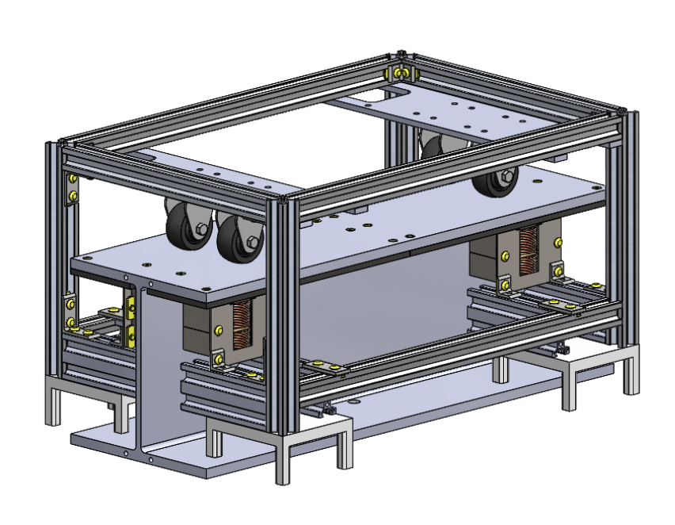
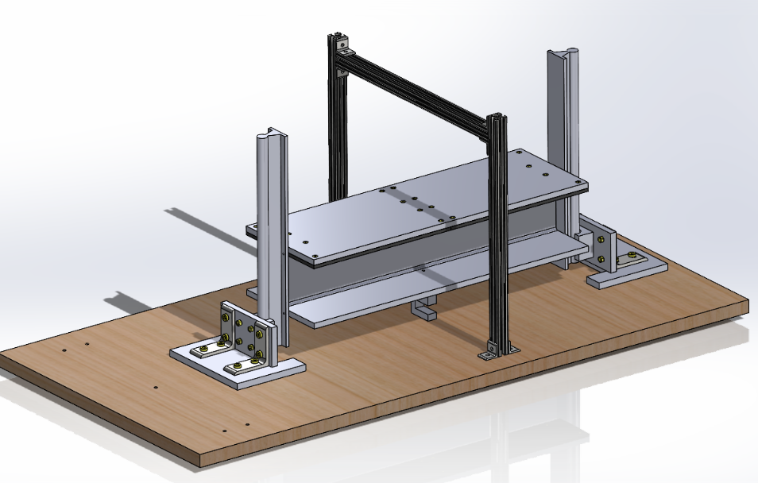
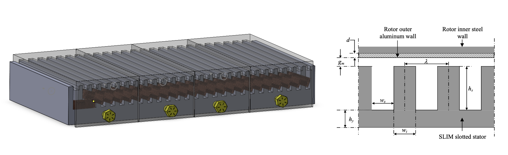
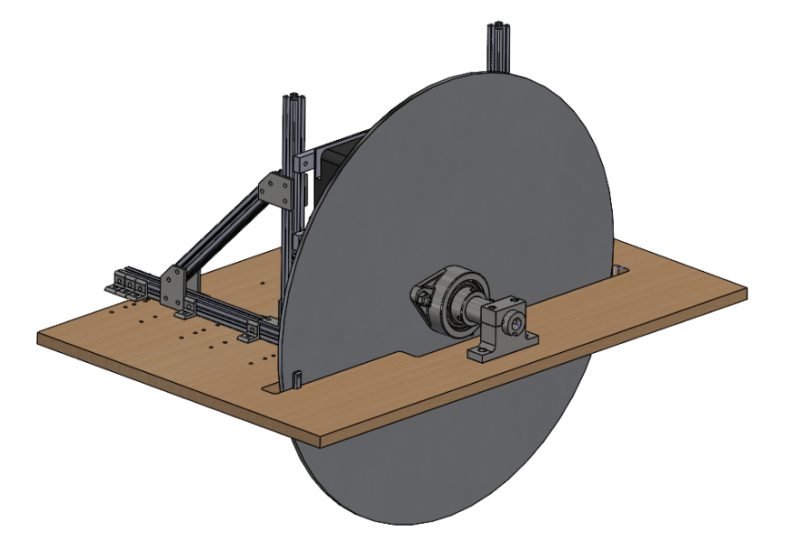
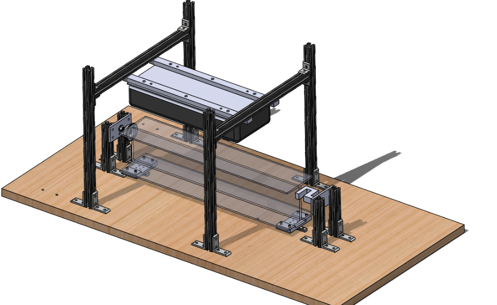
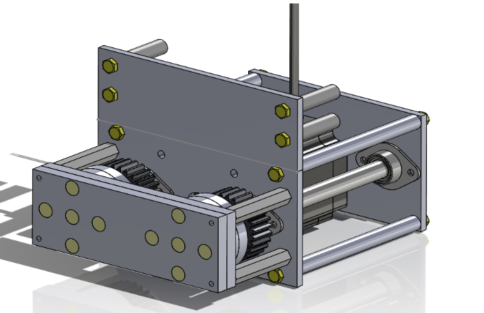
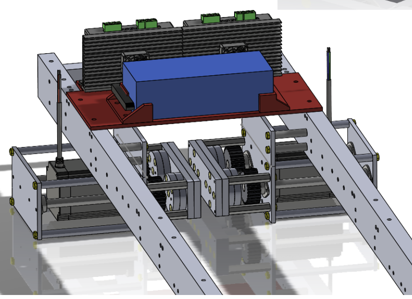

I am in charge of mechanical systems for Cornell Hyperloop, a student run engineering team.
For levitation, I wrote a 3 DoF code of a 4-magnet system. We're making a small-scale
demonstrator
for levitation (minipod) on which these controls will be implemented.
See the code here.

'Minipod' small scale demonstrator
I designed the circuit for levitation control; we vary current into electromagnets to control
force, so we needed a robust circuit which could ensure that we were driving the correct current into
our electromagnets, even as resistances in the system changed due to heat.
I also designed the test apparatus for levitation, which allows us to characterize the
performance of one or more of our magnets on our actual track.

Levitation test rig
For propulsion, we are designing and manufacturing a custom linear induction motor (LIM). For
this, I
wrote a script to calculate thrust and slip velocity given motor parameters, which allowed us to make
initial design decisions. We are also using ANSYS Maxwell to simulate motor performance. Based on these
results, we will laser cut silicon steel sheet and laminate it to form the stator.

LIM design
I designed test systems for our propulsion system as well. We have a flywheel test rig and a thrust test
rig - the
flywheel rig enables characterization of top speed, and the thrust rig helps find maximum force produced
from a standstill.

Flywheel test rig. The LIM is mounted behind the wheel (note the black corner of it
sticking out from the back) at a ~5mm airgap. Getting this big of a wheel to rotate without
wobbling was challenging, especially given how we are rotating it.

Thrust test rig. It uses a load cell to measure force produced by the LIM. Note the
similarities in steup to the levitation test rig, that is on purpose to save money + time!
I have also designed braking systems for the pod. We employ two separate brakes:
pneumatic brakes, which are a standard friction-based system, and magnetic brakes, which are contactless
and more efficient/resilient for use at high speeds. The ideal use case is to use our magnetic brakes at
high speeds, then mechanical brakes for stopping completely once we reach low speeds.

Magnetic braking module.
Our system is really interesting; it consists of two disks, each with 6 axially polarized magnets organized
circularly with alternating polarities. When the top and bottom disk are turned such that magnets of the
same polarity are stacked, magnetic fields are expelled outward, to interact with the track. When the disks
are rotated to have alternating polarities on top of eachother, the magnetic fields are much stronger in
between the magnets, and do not propagate outward as much.
We use a single stepper motor and gears to be able to rotate the disks - there is a lot of torque required
given the number of magnets.

Magnetic braking system integrated with our chassis.